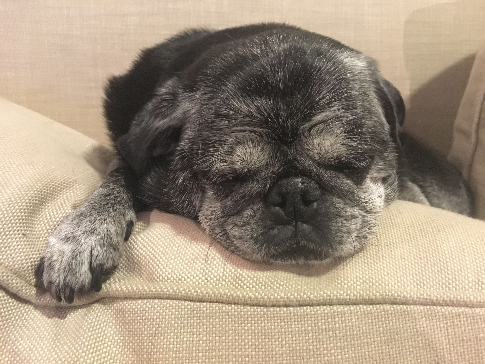

Watson
Watson has been the family dog since 2002, when I was still in high school.
This summer, Watson will be 15 years old! That's 106 in "dog years."

Watson's top 5 favorite things
- Being held and cuddled, especially by his masters, Janice and Jeff (my mom and step-dad)
- Whatever you're eating right now
- Dog beds, human beds, couches, and pillows for relaxing and taking naps
- Car rides and golf cart rides (he loves golfing)
- Posing for photos
Watson's top 5 least favorite things
- Getting left home alone.
- Getting his teeth brushed (but trust me he needs it)
- Being hassled by puppies with far too much energy.
- Going outside in the snow or rain.
- Wearing costumes.
Things I like about Watson
- He is soft and cuddly.
- He has a curly tail.
- He loves people.
- He's still kicking it at the impressive age of 106.